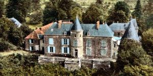
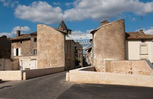
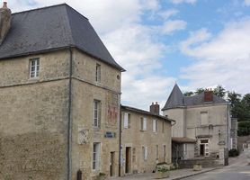
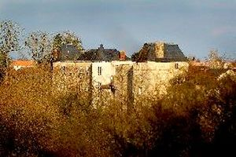
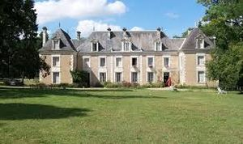

Recensement Jean-Claude Truffet
| Département | 86 — Vienne |
| Canton | Lusignan |
| Commune | Celle-l |
| Type d'édifice | Château |
| Période d'origine | XII-XVI |





A deux kilomètres de Lusignan à la Celle l'Evescaut château de la Livraie . La tour de guet est le seul vestige de l'ancien château épiscopal. Château de Lavau, dont la porte est inscrite comme M.H depuis 1935. la Grange et Mauprié (voir article). CELLE-VEZAIS, une habitation existait sur le site, daprès les textes, le 18 mai 1698 fut enterré Achille de Labarde, notaire de la baronnie de Celle lEvescault, décédé en la maison seigneuriale de Cellevezais. Ensuite le domaine passe par alliance à la famille Bellot et depuis la propriété appartient toujours à cette famille. Cest Emile Bellot qui fit bâtir l'actuel château. En 1860, il entreprend de gros travaux de construction, achevés plus tard par son fils Roger. Pendant la deuxième guerre mondiale, il sera très endommagé et des aménagements auront lieu dans les années 1950. LIVRAY, il relève alors du fief de la Gralière, dépendant de la châtellenie de Lusignan. C'est de cette époque que datent les fondations de la demeure actuelle et fut érigée durant le XVIIIe siècle. Vers 1765, on lui ajouta un étage ainsi qu'une première aile droite, la deuxième ne fut construite que plus tard. Cette construction fut terminée au XIXe siècle. LUSIGNAN, est probablement l'un des plus grands châteaux forts construits en France. Il fut le siège des seigneurs de Lusignan dont des membres de la famille furent roi de Chypre et de Jérusalem notamment Amaury II de Lusignan. En 1308, le château passe dans le domaine royal. A la fin du 14e siècle, travaux réalisés par Jean de Berry, qui se poursuivent jusqu'en 1463.
La CELLE -VEZAIS de plan rectangulaire, est flanqué aux angles de deux pavillons carrés, la façade ouest surplombe la vallée de la Vonne et le côté opposé donne sur une cour ouverte. Edifice sobre; la régularité des façades est soulignée par un bandeau mouluré qui sépare les étages. Afin de desservir les chambres de létage, une tour ronde descalier, surmontée d'un toit en cône, est accolée au centre de la façade ouest. Demeure noble, elle possède son pigeonnier, datant du XVIe ou XVIIe siècle, jouxtant lun des pavillons latéraux. LUSIGNAN, le château, déjà depuis longtemps utilisé comme carrière de pierres, est rasé par le comte de Blossac, l'intendant du Poitou, au XVIIIe siècle, pour en faire un parc public d'agrément : une allée de tilleuls, entourée de jardins, conduit à une terrasse avec une très belle vue sur la vallée. Construit autour d'un étroit promontoire bordé de profondes vallées, il reste cependant du château des pans de murs entiers, plaqués sur les falaises. Il reste, aussi, une partie du donjon, la base de la tour Poitevine, une citerne et lentrée d'un souterrain fermé dont on retrouve peut-être une sortie à proximité de l'église de la ville. Il reste aussi une tour-escalier dans la muraille et les fondations d'un moutardier. Une partie fortifiée par Vauban est devenue successivement prison, école primaire puis syndicat d'initiative.
Celle-Vezais Achille de Labarde
"
A Lusignan grav 2-3-4; la Livrée, de Lavau, du Vezais grav-1 46° 25' 28" nord, 0° 11' 18" est.